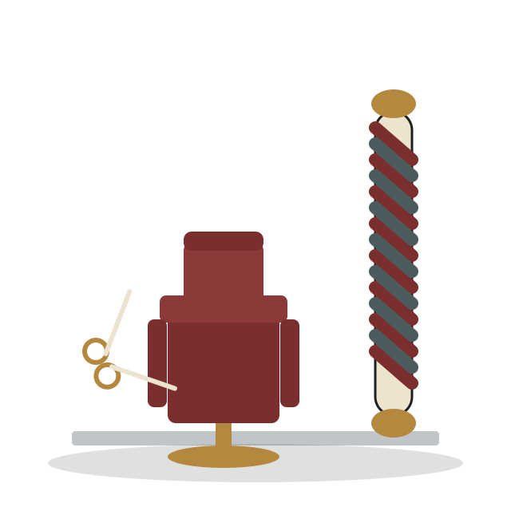

Un tuns bun nu se grăbește.
Suntem un barbershop mic în centrul Chișinăului, unde fiecare client stă pe scaun exact cât are nevoie — nu mai puțin, ca să iasă pe ușă mulțumit, nu mai mult, ca să nu piardă seara.
Tuns clasic, skin fade, barbierit cu briciul și prosoape calde — toate făcute de o echipă mică, cu unelte îngrijite și scaune vechi de piele, aduse special pentru atmosferă.

Despre noi
Bărbierul de Colț a pornit de la o frustrare simplă: prea multe saloane grăbesc clientul ca să încapă cât mai mulți oameni într-o oră. Noi am ales invers — programări la interval fix, un singur client pe scaun, fără suprapuneri.
Lucrăm cu unelte întreținute zilnic, prosoape calde adevărate și produse de îngrijire pentru barbă și piele, nu doar pentru păr. Rezultatul contează mai mult decât viteza.
„Un client mulțumit vine înapoi peste trei săptămâni. Un client grăbit nu se mai întoarce."
Fondatorul, Sergiu Lupu, a lucrat șapte ani în saloane din Chișinău și București înainte să deschidă acest spațiu, alături de încă doi barberi din echipă.
Servicii și prețuri
Filtrează după categorie ca să găsești rapid ce cauți.
Echipa
Trei barberi, trei stiluri — alegi cu cine te programezi.
Program de funcționare
Weekend-ul se ocupă rapid — recomandăm programare cu 2-3 zile înainte.
| Ziua | Ora | Detalii | Preț |
|---|
Programează-te
Completează formularul cu datele tale și serviciul dorit — te sunăm noi să confirmăm ora exactă.
- Adresă Str. Pușkin 17, Chișinău
- Telefon +373 60 987 654
- E-mail programari@barbieruldecolt.md
- Rețele sociale Instagram · Facebook